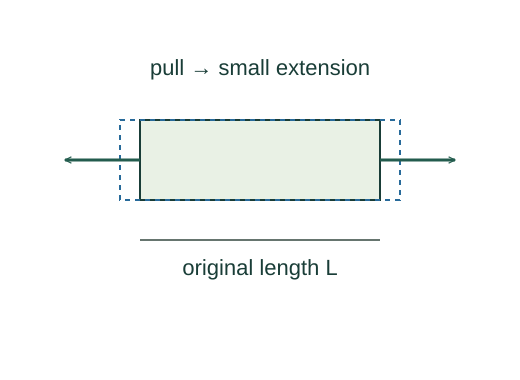

Derive the elastic extension of a rod
Young’s modulus expresses a material’s linear relation between tensile stress and strain. Solving that constitutive relation determines how a uniform rod stretches.
What the symbols mean
F: axial tensile force; A: cross-sectional area; L: original length; ΔL: extension; Y: Young’s modulus (Pa).
When this applies
Uniform rod under axial load, approximately uniform stress, small strain, and elastic behaviour within the linear regime.
Developing the argument

Describe force per area
Two rods of different thickness do not respond identically to the same force. Stress measures the load relative to the cross section.
Describe fractional extension
A longer rod stretches more under the same material stress. Strain removes the original length from the comparison and is dimensionless.
State the material law
Experiments in the linear elastic regime give stress proportional to strain. Their ratio defines Young’s modulus; it is not obtained from force balance alone.
Rearrange and connect to a spring
Solve for extension. The same rod acts like a spring with stiffness YA/L when its length and cross section can be treated as constant.
A closer lookWhat energy does this effective spring store? ↗A worked example
A 2 m rod with A = 10⁻⁴ m² and Y = 2 × 10¹¹ Pa stretches 10⁻⁴ m under a 1000 N axial load.
Derivation behind this calculation ↗A point to keep straight
Young’s modulus describes a material; spring constant also depends on geometry. Beyond the elastic range this formula can fail.
Check the assumptions and derivation ↗